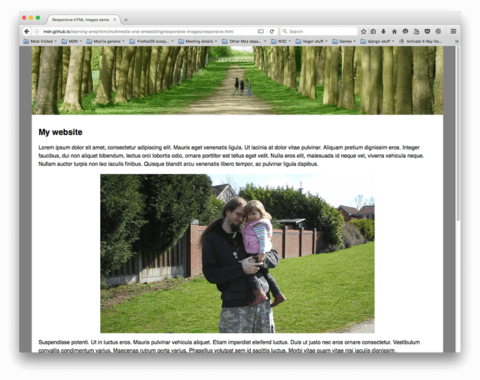
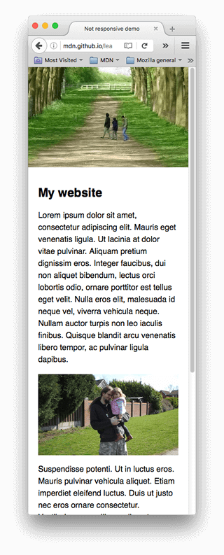
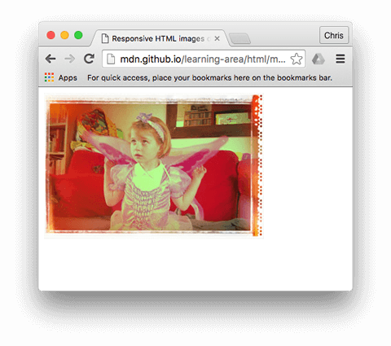
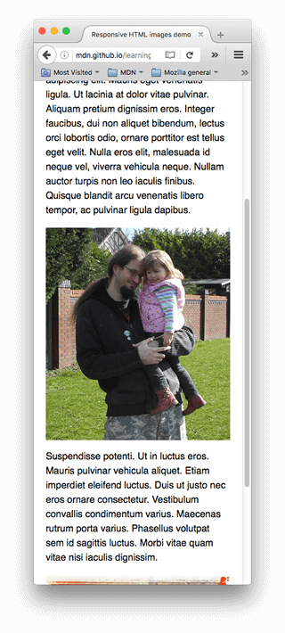

Using responsive images in HTML
In this article, we'll learn about the concept of responsive images — images that work well on devices with widely differing screen sizes, resolutions, and other such features — and look at what tools HTML provides to help implement them. This helps to improve performance across different devices.
Why responsive images?
Let's examine a typical scenario. A typical website may contain a header image and some content images below the header. The header image will likely span the whole of the width of the header, and the content image will fit somewhere inside the content column. Here's an example:

This works well on a wide screen device, such as a laptop or desktop (you can see the example live and find the source code on GitHub.) We won't discuss the CSS much in this lesson, except to say that:
- The body content has been set to a maximum width of 1200 pixels — in viewports above that width, the body remains at 1200px and centers itself in the available space. In viewports below that width, the body will stay at 100% of the width of the viewport.
- The header image has been set so that its center always stays in the center of the header, no matter what width the heading is set at. If the site is being viewed on a narrower screen, the important detail in the center of the image (the people) can still be seen, and the excess is lost off either side. It is 200px high.
- The content images have been set so that if the body element becomes smaller than the image, the images start to shrink so that they always stay inside the body, rather than overflowing it.
However, issues arise when you start to view the site on a narrow screen device. The header below looks OK, but it's starting to take up a lot of the screen height for a mobile device. And at this size, it is difficult to see faces of the two people within the first content image.

An improvement would be to display a cropped version of the image which displays the important details of the image when the site is viewed on a narrow screen. A second cropped image could be displayed for a medium-width screen device, like a tablet. The general problem whereby you want to serve different cropped images in that way, for various layouts, is commonly known as the art direction problem.
In addition, there is no need to embed such large images on the page if it is being viewed on a mobile screen. Doing so can waste bandwidth; in particular, mobile users don't want to waste bandwidth by downloading a large image intended for desktop users, when a small image would do for their device. Conversely, a small raster image starts to look grainy when displayed larger than its original size (a raster image is a set number of pixels wide and a set number of pixels tall). Ideally, multiple resolutions would be made available to the user's web browser. The browser could then determine the optimal resolution to load based on the screen size of the user's device. This is called the resolution switching problem.
To make things more complicated, some devices have high resolution screens that need larger images than you might expect to display nicely. This is essentially the same problem, but in a slightly different context.
You might think that vector images would solve these problems, and they do to a certain degree — they are small in file size and scale well, and you should use them wherever possible. However, they aren't suitable for all image types. Vector images are great for simple graphics, patterns, interface elements, etc., but it starts to get very complex to create a vector-based image with the kind of detail that you'd find in say, a photo. Raster image formats such as JPEGs are more suited to the kind of images we see in the above example.
This kind of problem didn't exist when the web first existed, in the early to mid 90s — back then the only devices in existence to browse the Web were desktops and laptops, so browser engineers and spec writers didn't even think to implement solutions. Responsive image technologies were implemented recently to solve the problems indicated above by letting you offer the browser several image files, either all showing the same thing but containing different numbers of pixels (resolution switching), or different images suitable for different space allocations (art direction).
How do you create responsive images?
In this section, we'll look at the two problems illustrated above and show how to solve them using HTML's responsive image features. You should note that we will be focusing on <img> elements for this section, as seen in the content area of the example above — the image in the site header is only for decoration, and therefore implemented using CSS background images. CSS arguably has better tools for responsive design than HTML, and we'll talk about those in a future CSS module.
Resolution switching: Different sizes
So, what is the problem that we want to solve with resolution switching? We want to display identical image content, just larger or smaller depending on the device — this is the situation we have with the second content image in our example. The standard <img> element traditionally only lets you point the browser to a single source file:
<img src="elva-fairy-800w.jpg" alt="Elva dressed as a fairy" />
We can however use two attributes — srcset and sizes — to provide several additional source images along with hints to help the browser pick the right one. You can see an example of this in our responsive.html example on GitHub (see also the source code):
<img
srcset="elva-fairy-480w.jpg 480w, elva-fairy-800w.jpg 800w"
sizes="(width <= 600px) 480px,
800px"
src="elva-fairy-800w.jpg"
alt="Elva dressed as a fairy" />
The srcset and sizes attributes look complicated, but they're not too hard to understand if you format them as shown above, with a different part of the attribute value on each line. Each value contains a comma-separated list, and each part of those lists is made up of three sub-parts. Let's run through the contents of each now:
srcset defines the set of images we will allow the browser to choose between, and what size each image is. Each set of image information is separated from the previous one by a comma. For each one, we write:
- An image filename (
elva-fairy-480w.jpg) - A space
- The image's intrinsic width in pixels (
480w) — note that this uses thewunit, notpxas you might expect. An image's intrinsic size is its real size, which can be found by inspecting the image file on your computer (for example, on a Mac you can select the image in Finder and press Cmd + I to bring up the info screen).
sizes defines a set of media conditions (e.g., screen widths) and indicates what image size would be best to choose, when certain media conditions are true — these are the hints we talked about earlier. In this case, before each comma we write:
- A media condition (
(width <= 600px)) — you'll learn more about these in the CSS topic, but for now let's just say that a media condition describes a possible state that the screen can be in. In this case, we are saying "when the viewport width is 600 pixels or less". - A space
- The width of the slot the image will fill when the media condition is true (
480px)
Note:
In sizes, you can use any length value. For example, rather than providing an absolute width (for example, 480px), you can alternatively provide a width relative to the viewport (for example, 50vw). However, you cannot use a percentage as the slot width. You may have noticed that the last slot width has no media condition (this is the default that is chosen when none of the media conditions are true). The browser ignores everything after the first matching condition, so be careful how you order the media conditions.
So, with these attributes in place, the browser will:
- Look at screen size, pixel density, zoom level, screen orientation, and network speed.
- Work out which media condition in the
sizeslist is the first one to be true. - Look at the slot size given to that media query.
- Load the image referenced in the
srcsetlist that has the same size as the slot. If there isn't an exact match for the display size, the browser will choose the first image that is bigger than the chosen slot size and scale it down to fit.
And that's it! At this point, if a supporting browser with a viewport width of 480px loads the page, the (width <= 600px) media condition will be true, and so the browser chooses the 480px slot. The elva-fairy-480w.jpg will be loaded, as its inherent width (480w) is closest to the slot size. The 800px picture is 128KB on disk, whereas the 480px version is only 63KB — a saving of 65KB. Now, imagine if this was a page that had many pictures on it. Using this technique could save mobile users a lot of bandwidth.
Note:
When testing this with a desktop browser, if the browser fails to load the narrower images when you've got its window set to the narrowest width, have a look at what the viewport is (you can approximate it by going into the browser's JavaScript console and typing in document.querySelector('html').clientWidth). Different browsers have minimum sizes that they'll let you reduce the window width to, and they might be wider than you'd think. When testing it with a mobile browser, you can use tools like Firefox's about:debugging page to inspect the page loaded on the mobile using the desktop developer tools.
To see which images were loaded, you can use Firefox DevTools's Network Monitor tab or Chrome DevTools's Network panel. For Chrome, you may also want to disable cache to prevent it from picking already downloaded images.
Older browsers that don't support these features will just ignore them. Instead, those browsers will go ahead and load the image referenced in the src attribute as normal.
Note:
In the <head> of the example linked above, you'll find the line <meta name="viewport" content="width=device-width">: this forces mobile browsers to adopt their real viewport width for loading web pages (some mobile browsers lie about their viewport width, and instead load pages at a larger viewport width then shrink the loaded page down, which is not very helpful for responsive images or design).
Resolution switching: Same size, different resolutions
Suppose you have an image that will be rendered at the same real-world size on displays that have different screen resolutions. You can provide a better user experience on high resolution displays by serving a higher resolution version of the image.
To achieve this you can allow the browser to choose an appropriate resolution image by using srcset with x-descriptors and without sizes — a somewhat easier syntax! You can find an example of what this looks like in srcset-resolutions.html (see also the source code):
<img
srcset="elva-fairy-320w.jpg, elva-fairy-480w.jpg 1.5x, elva-fairy-640w.jpg 2x"
src="elva-fairy-640w.jpg"
alt="Elva dressed as a fairy" />
Note that even though the image is always displayed with the same size, on higher resolution displays you get to see more details.

In this example, the following CSS is applied to the image so that it will have a width of 320 pixels on the screen (also called CSS pixels):
img {
width: 320px;
}
In this case, sizes is not needed — the browser works out what resolution the display is that it is being shown on, and serves the most appropriate image referenced in the srcset. So if the device accessing the page has a standard/low resolution display, with one device pixel representing each CSS pixel, the elva-fairy-320w.jpg image will be loaded (the 1x is implied, so you don't need to include it.) If the device has a high resolution of two device pixels per CSS pixel or more, the elva-fairy-640w.jpg image will be loaded. The 640px image is 93KB, whereas the 320px image is only 39KB.
Art direction
To recap, the art direction problem involves wanting to change the image displayed to suit different image display sizes. For example, a web page includes a large landscape shot with a person in the middle when viewed on a desktop browser. When viewed on a mobile browser, that same image is shrunk down, making the person in the image very small and hard to see. It would probably be better to show a smaller, portrait image on mobile, which zooms in on the person. The <picture> element allows us to implement just this kind of solution.
Returning to our original not-responsive.html example, we have an image that badly needs art direction:
<img src="elva-800w.jpg" alt="Chris standing up holding his daughter Elva" />
Let's fix this, with <picture>! Like <video> and <audio>, the <picture> element is a wrapper containing several <source> elements that provide different sources for the browser to choose from, followed by the all-important <img> element. The code in responsive.html looks like so:
<picture>
<source media="(width < 800px)" srcset="elva-480w-close-portrait.jpg" />
<source media="(width >= 800px)" srcset="elva-800w.jpg" />
<img src="elva-800w.jpg" alt="Chris standing up holding his daughter Elva" />
</picture>
- The
<source>elements include amediaattribute that contains a media condition — as with the firstsrcsetexample, these conditions are tests that decide which image is shown — the first one that returns true will be displayed. In this case, if the viewport width is less than 800px wide, the first<source>element's image will be displayed. If the viewport width is 800px or more, it'll be the second one. - The
srcsetattributes contain the path to the image to display. Just as we saw with<img>above,<source>can take asrcsetattribute with multiple images referenced, as well as asizesattribute. So, you could offer multiple images via a<picture>element, but then also offer multiple resolutions of each one. Realistically, you probably won't want to do this kind of thing very often. - In all cases, you must provide an
<img>element, withsrcandalt, right before</picture>, otherwise no images will appear. This provides a default case that will apply when none of the media conditions return true (you could actually remove the second<source>element in this example), and a fallback for browsers that don't support the<picture>element.
This code allows us to display a suitable image on both wide screen and narrow screen displays, as shown below:

Note:
You should use the media attribute only in art direction scenarios; when you do use media, don't also offer media conditions within the sizes attribute.
Why can't we just do this using CSS or JavaScript?
When the browser starts to load a page, it starts to download (preload) any images before the main parser has started to load and interpret the page's CSS and JavaScript. That mechanism is useful in general for reducing page load times, but it is not helpful for responsive images — hence the need to implement solutions like srcset. For example, you couldn't load the <img> element, then detect the viewport width with JavaScript, and then dynamically change the source image to a smaller one if desired. By then, the original image would already have been loaded, and you would load the small image as well, which is even worse in responsive image terms.
Implementing your own responsive images
In this exercise, we're expecting you to be brave and do it alone, mostly. We want you to implement your own suitable art-directed narrow screen/wide screenshot using <picture>, and a resolution switching example that uses srcset.
- Write some HTML to contain your code (use
not-responsive.htmlas a starting point, if you like). - Find a nice wide screen landscape image with some kind of detail contained in it somewhere. Create a web-sized version of it using a graphics editor, then crop it to show a smaller part that zooms in on the detail, and create a second image (about 480px wide is good for this).
- Use the
<picture>element to implement an art direction picture switcher! - Create multiple image files of different sizes, each showing the same picture.
- Use
srcset/sizesto create a resolution switcher example, either to serve the same size image at different resolutions depending on the device resolution or to serve different image sizes depending on the viewport widths.
Summary
That's a wrap for responsive images — we hope you enjoyed playing with these new techniques. As a recap, there are two distinct problems we've been discussing here:
- Art direction: The problem whereby you want to serve cropped images for different layouts — for example a landscape image showing a full scene for a desktop layout, and a portrait image showing the main subject zoomed in for a mobile layout. You can solve this problem using the
<picture>element. - Resolution switching: The problem whereby you want to serve smaller image files to narrow-screen devices, as they don't need huge images like desktop displays do — and to serve different resolution images to high density/low density screens. You can solve this problem using vector graphics (SVG images) and the
srcsetwithsizesattributes.
See also
- Learn: Responsive design
- Jason Grigsby's excellent introduction to responsive images
- Responsive Images: If you're just changing resolutions, use srcset — includes more explanation of how the browser works out which image to use
<img><picture><source>